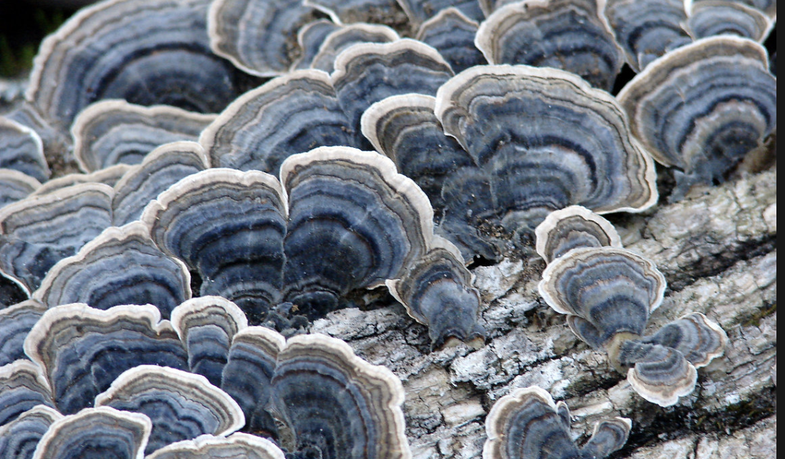
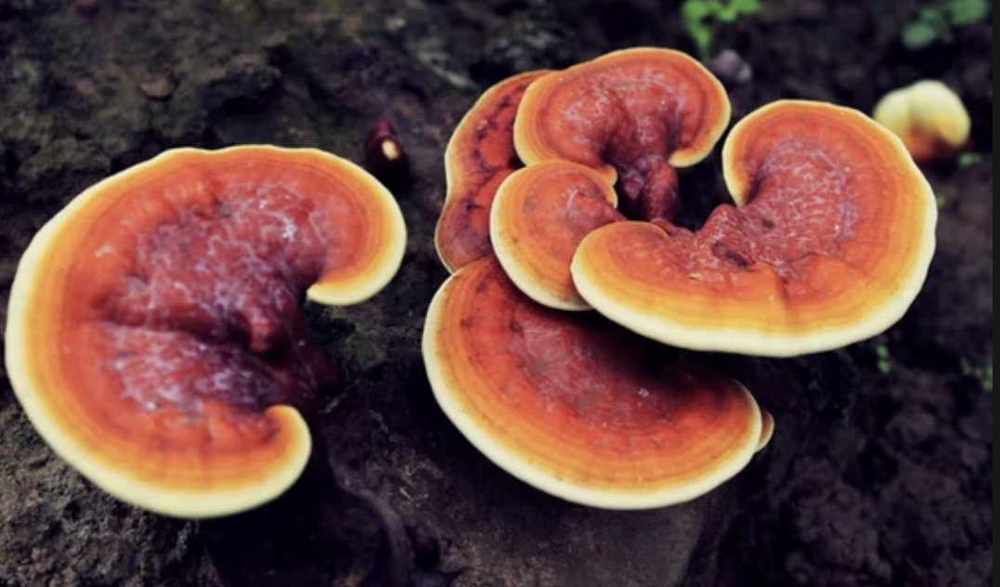

There are two species of mushrooms that show promise in both treating and preventing cancer.
Turkey Tail Mushrooms (Trametes Versicolor)
Turkey Tail mushrooms are a variety that have been used for centuries in Asia for their medicial properties. These mushrooms grow out of hardwood trees and are very common throughout the United States. The mushrooms have a reputation for boosting the immune system and assistance in fighting off cancer. These mushrooms contain high amounts of antioxidants. They also contain polysacharopeptides, which are responsible for boosting the immune system. Those with Leukemia, Breast, Colon, and Lung Cancers showed higher rates of survival and promise in treating it. These mushrooms are considered safe but they have minor side effects such as diaherrea and nails changing color. The mushrooms are taken by brewing a tea with them or crushed into making capscules.
Reishi Mushrooms (Ganoderma Lingzhi)
The Reishi mushroom is known as the mushroom of immortality. This mushroom has the ability to kill cancer cells and inhibit tumor growth. The mushroom Best treats breast, colon, lung, prostrate and sarcoma cancers. Besides just treating the problem it can help prevent cancer to begin with. Reishi mushrooms increase strength and stamina which helps with various aspects of life. It also can lower chlosterol and treat the lower urinary tract issues in males. Another use that it has is adding those who are being treated for HIV or AIDS. Despite all the benefits it does still have some side effects, which are nausea, insomnia, and liver injury. These mushrooms are taken through brewing tea typically.